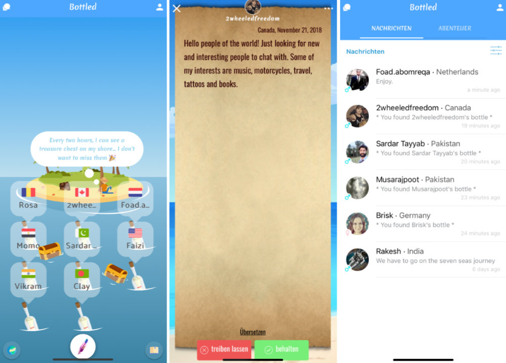
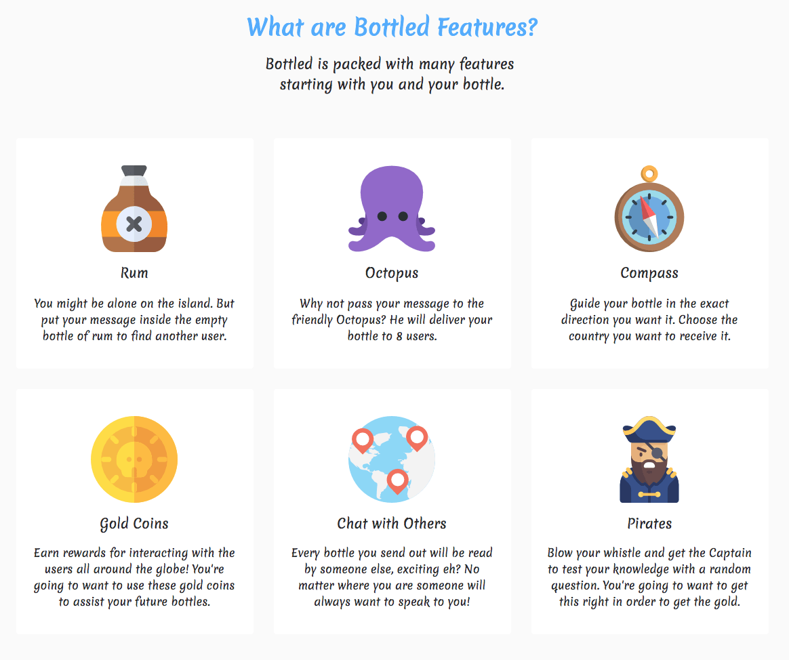

Self-Improvement & Productivity
Bottled - Micro Journaling in your Daily life
Author: Jessica L. Donovan - August 29, 2024
In an era where our lives are becoming increasingly digital, the art of journaling has seen a resurgence, but with a modern twist. Enter Bottled, an innovative app that merges the simplicity of traditional journaling with the efficiency of modern technology. Whether you're a seasoned journal keeper or a newcomer looking to document your thoughts and feelings, Bottled provides an intuitive platform for micro-journaling that fits seamlessly into your daily routine.
What is micro-journaling?
Micro-journaling is the practice of writing brief, concise entries rather than lengthy passages. This approach allows users to capture their thoughts and emotions quickly, making it an ideal solution for those who find traditional journaling time-consuming or overwhelming. With Bottled, users can jot down snippets of their day, reflect on their emotions, or even capture fleeting ideas, all within a few minutes.
Features that make Bottled stand out
Minimalist Design:
Bottled prides itself on its clean, distraction-free interface. The app's minimalist design ensures that users can focus solely on their writing, without being overwhelmed by unnecessary features or clutter.
Daily Prompts
For those who struggle with what to write, Bottled offers daily prompts designed to spark creativity and self-reflection. These prompts range from simple questions about your day to deeper introspective topics, helping you to explore your thoughts and feelings in new ways.
Customization Options
Bottled allows users to customize their journaling experience. From selecting different themes to personalizing the font and layout, you can tailor the app to suit your preferences, making the experience uniquely yours.
